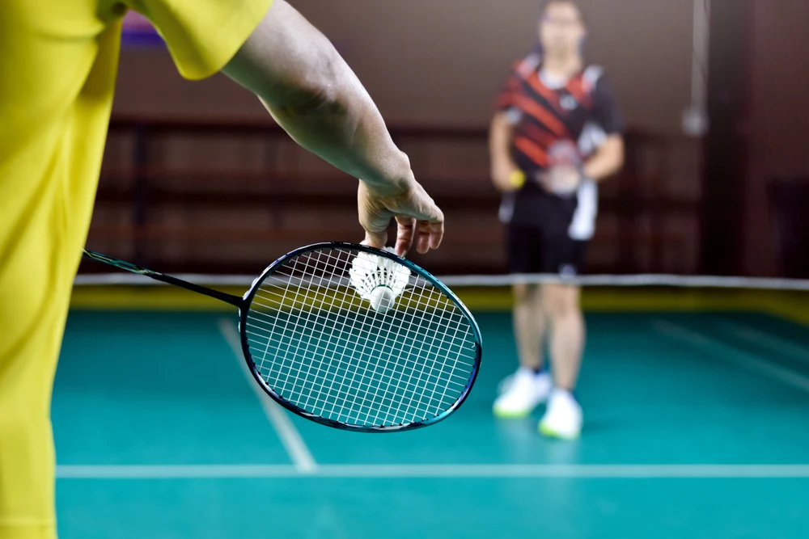

Favourite Food & Drink
 |
Chicken chop is my all-time favourite dish, a perfect combination of crispy and juicy goodness. |
 |
Teh Ais, also known as iced milk tea, is a beloved drink that perfectly captures the essence of Malaysia's vibrant food culture. |
Favourite Sports
| Football is more than just a game, it’s a passion that unites people worldwide. I love how the sport combines strategy, skill, and sheer determination. | |
|  | Badminton offers a unique blend of agility, speed, and precision. It’s a sport that sharpens reflexes and requires constant focus. I enjoy the fast-paced rallies and the tactical placement of shots. |